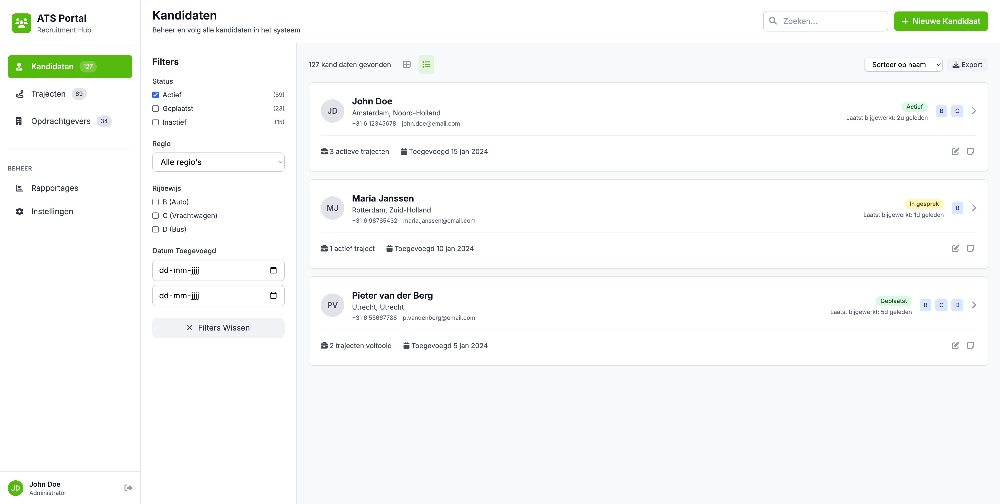
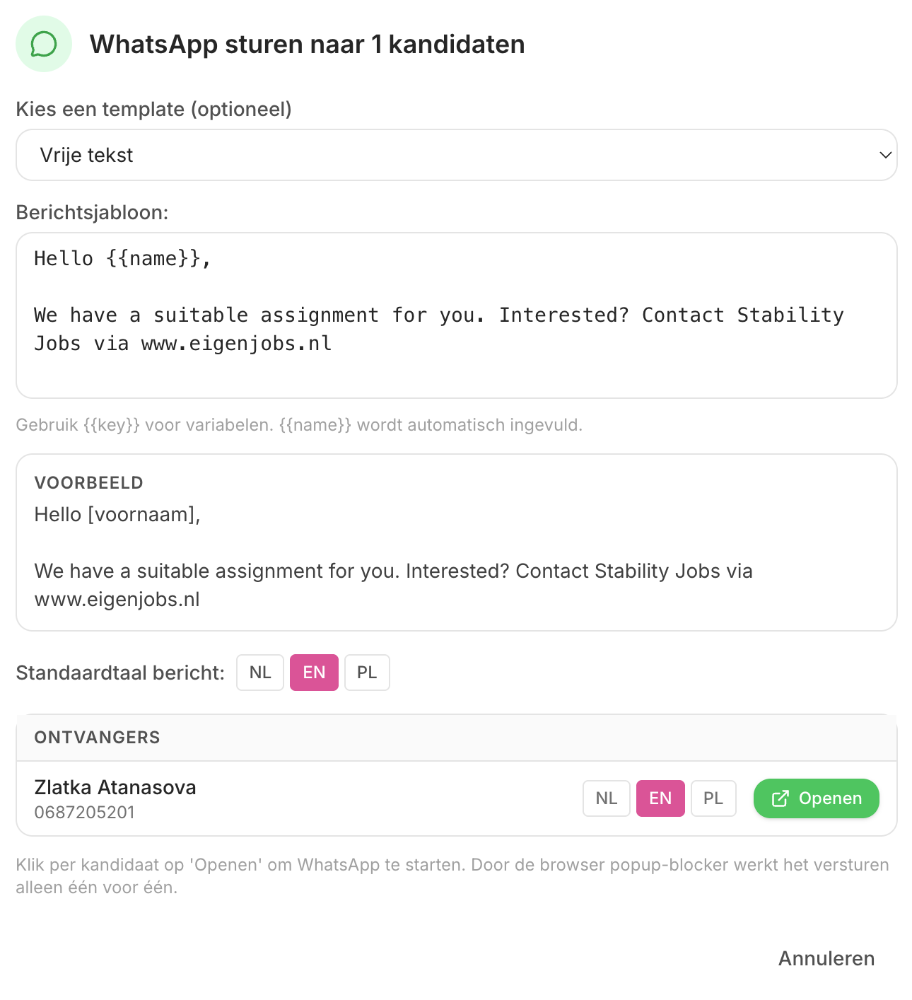

Kandidaten in Excel, afspraken in WhatsApp, alles nog een keer overtikken in de verloning.
Het werkt.
Tot het misgaat.
Een ATS op maat voor kleine uitzendbureaus, gebouwd op jouw manier van werken. Je verloning blijft staan, de chaos eromheen verdwijnt.
Plan een kennismaking van 20 minuten Geen verkooppraatje. Ik laat gewoon zien wat ik voor twee andere bureaus bouwde.Je hebt een goede kandidaat gesproken. Pools, kan maandag beginnen. Drie weken later belt een opdrachtgever met spoed en je weet: ik had iemand. Maar wie was het ook alweer, en in welke chat?
Je tikt elke kandidaat twee keer in. Een keer voor jezelf, een keer in de verloning. Elke nieuwe flexkracht is een uur administratie die niemand betaalt.
Een flexkracht stuurt een spraakbericht in het Roemeens. Je intercedent speelt het drie keer af om te raden wat er bedoeld wordt. Communicatie wordt loterij.
En ergens op de achtergrond tikt 2027 mee — want straks moet je aantoonbaar laten zien dat je administratie klopt.
Dit kost je geen klant per se. Het kost je er steeds eentje. Net die ene die je niet zag.
Alle kandidaten op één plek. Zoeken op taal, beschikbaarheid, sector in drie seconden. Geen Excel-tabbladen, geen verloren chats.
Spraakbericht in het Pools of Roemeens komt er automatisch vertaald en uitgeschreven in. Je intercedent antwoordt in het Nederlands, de kandidaat krijgt het terug in zijn eigen taal.
Geen migratie, geen experiment in jouw verloning. Wij koppelen eraan vast, jij voert niks meer dubbel in. Bestand klaar, één klik, doorgezet.
De wet komt eraan, je dossier moet kloppen. Het systeem houdt contactmomenten, afspraken en documenten automatisch vast. Aantoonbaar, exporteerbaar.

Kandidatenoverzicht — zoeken op taal, beschikbaarheid en sector
Geen nieuw systeem dat je hele manier van werken omgooit. Wel het einde van overtikken, kwijtraken en gokken.
En je data is altijd van jou. Wil je ooit weg, dan exporteer je alles met één druk op de knop. Geen gijzeling, geen lock-in. Wat jouw bedrijf is, blijft van jouw bedrijf.
Ik heb dit nu voor twee uitzendbureaus gebouwd die precies hier vastliepen: kandidaten in Excel, alles via WhatsApp. Nu staat het in één systeem.
Ik ben geen softwareclub met een salesafdeling. Ik ben de bouwer zelf. Je praat met de persoon die het maakt en onderhoudt.

Voordat je iets beslist, wil je weten waar je staat. Daarom begin ik met een scan: ik kijk naar je huidige werkwijze, je systemen en je Wtta-gereedheid. Je krijgt een helder rapport met wat er kan, wat het kost en wat het oplevert.
Bevalt het? Dan bouwen we door tegen een afgesproken vaste prijs en een vaste opleverdatum. Geen open eind, geen uurtje-factuurtje. Je weet vooraf wat je krijgt en wanneer.
Geen verplichting. Denk je daarna “leuk, niks voor mij”, dan heb ik er nog steeds van geleerd.